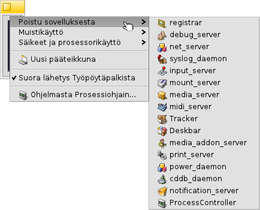
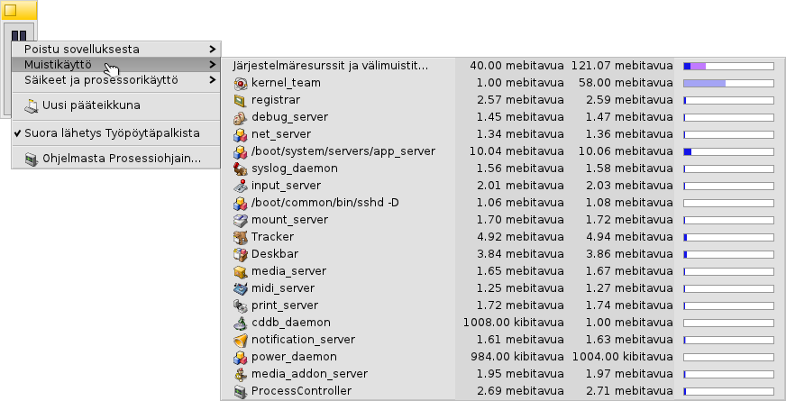

Suomi
Suomi Français
Français Deutsch
Deutsch Italiano
Italiano Русский
Русский Español
Español Svenska
Svenska 日本語
日本語 Українська
Українська 中文 ［中文］
中文 ［中文］ Português
Português Slovenčina
Slovenčina Magyar
Magyar Português (Brazil)
Português (Brazil) English
English Prosessivalvonta
Prosessivalvonta
| Työpöytäpalkki | ||
| Sijainti | /boot/system/apps/ProcessController | |
| Asetukset | ei mitään |
 Prosessivalvonta-sovelman päätehtävä on näyttää prosessori(e)n aktiviteetti ja käytetyn muistin määrän. Se sallii yksittäisten ryhmien valvonnan, niiden prioriteetin vaihtamisen, ja niiden tappamisen, jos ohjelma jumittuu. Moniprosessoriympäristössä se sallii sinun ottaa pois käytöstä yksittäisiä prosessoreita tai prosessoriytimiä. Kun Seuraaja tai Työpöytäpalkki kaatuu, voit käynnistää ne uudelleen Prosessivalvonnan valikosta.
Prosessivalvonta-sovelman päätehtävä on näyttää prosessori(e)n aktiviteetti ja käytetyn muistin määrän. Se sallii yksittäisten ryhmien valvonnan, niiden prioriteetin vaihtamisen, ja niiden tappamisen, jos ohjelma jumittuu. Moniprosessoriympäristössä se sallii sinun ottaa pois käytöstä yksittäisiä prosessoreita tai prosessoriytimiä. Kun Seuraaja tai Työpöytäpalkki kaatuu, voit käynnistää ne uudelleen Prosessivalvonnan valikosta.
Indikaattorit vasemmalla näyttävät jokaisen prosessorin käytön, samalla kun palkit oikealla näyttävät muistikulutuksen. Muista, että indikaattoreiden lukumäärä riippuu tietokoneen prosessorien/prosessoriytimien lukumäärästä.
Jos Prosessivalvonta ei ole vielä käynnissä, ohjelma kysyy, että avataanko sovellus ikkunatilasssa vain suorana lähetysenä Työpöytäpalkissa. Ikkunatilassa voit muuttaa palkkinäytön kokoa muuttamalla ikkunan kokoa ja käyttämällä sitten Replikantti-kahvaa sen raahaamiseksi Työpöydälle.
Kun se on asennettu, se toimii hiiren kakkospainikkeen asiayhteysvalikosta.
Sovelman poistamiseksi Työpöytäpalkista, poista valinta asiayhteysvalikossa.
Poistu sovelluksesta
Sovelluksesta poistumiseksi valitse sen nimi -valikosta. Tämä on siisti tapa sovelluksen sulkemiseen, aivan kuin napsautettaisiin sulje-painiketta. Ole kuitenkin varovainen, että et sulje järjestelmäprosesseja kuten palvelimia tai taustaprosesseja. Järjestelmäsi saatta lakata toimimasta luotettavasti.
Muistikäyttö
Muistinkäytön valvonta voi olla melko epätarkkaa.
Tämä valikko sallii sinun valvoa järjestelmäsi eri ryhmien muistikäyttöä. Ryhmän nimen vieressä on kaksi saraketta: ensimmäisenä varatun kirjoitettavan muistin määrä, kun taas toinen näyttää kaiken kirjoitussuojatun muistitilan (esimerkiksi jaetut kirjastot).
Ensimmäinen rivi Järjestelmäresurssit ja välimuistit... näyttää järjestelmän ja kaikkien sovellusten käyttämän muistin yhteismäärän. Sinisen palkin pituus perustuu tietokoneesi fyysisen muistin yhteismäärään. Seuraava rivi näyttää jokaisen prosessin käyttämän muistin määrän. Huomaa, että palkin pituus perustuu vain todelliseen käytetyn muistin määrään.
| Vain tietyn sovelluksen käyttämä muisti (kirjoitusoikeudella) | ||
| Kirjoitussuojatun tilan sisältävä muisti (voidaan jakaa muiden sovellusten kanssa) |
Säikeet ja prosessorikäyttö
Tämä valikko sallii sinun vaihtaa säikeen prioriteettejä, tappaa ryhmiä ja vikajäljittää niitä.
| Käyttöjärjestelmäydinkoodia | ||
| Käyttäjäkoodia | ||
| Joutosäie |
Ensimmäisellä tasolla näet ryhmänimet. Yhtä napsauttamalla voit tappaa koko ryhmän. Palkin tummansininen osa on käyttöjärjestelmäydinkoodissa käytetty aika, vaaleansininen on käyttäjäkoodiaika, vihreä osa on joutosäieaika. Jos palkki on kokonaan sininen, se tarkoittaa että ryhmä käyttää kaiken prosessointitehon.
Toinen taso näyttää ryhmän tietyt säikeet. Napsauttamalla yhtä voit vikajäljittää tai tappaa sen. Jos palkki on kokonaan sininen, niin se tarkoittaa, että säie on saanut prosessorin/prosessoriytimen kuormituksen maksimikuormitukseen.
Viimeisin valikkotaso sallii sinun vaihtaa säikeen prioriteettia. Ole huolellinen siinä! Peukalosääntönä on, että säikeen prioriteetin tulisi olla prosesssorikäytön käänteisarvo. Tämä tarkoittaa, että mitä mitä enemmän se yrittää käyttää prosessoriaikaa, sitä alhaisempi sen prioriteetin tulisi olla. Yleensä, älä sotke sovellusten prioriteetteja; ota yhteyttä sovelluksen kehittäjään, se on hänen tehtävänsä.